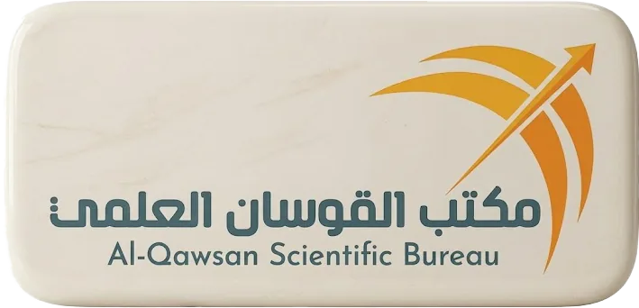

Top 5
Private Distributor

Iraq's leading pharmaceutical distributor — delivering world-class healthcare solutions since 2009.
Established in 2009 in Baghdad, Al-Qawsan Scientific Bureau has grown into one of Iraq's top five pharmaceutical distributors in the private sector.
We provide a wide range of medical products and services, targeting healthcare professionals, pharmacies, and the public sector. Our dedication to quality and innovation drives our partnerships with global leaders, ensuring the availability of safe and effective medications across Iraq.
With over 1,500 employees spanning all Iraqi governorates, Al-Qawsan maintains a close collaboration with the Iraqi Ministry of Health to address public health challenges and improve access to care.
Comprehensive pharmaceutical solutions built on over 15 years of expertise in the Iraqi market.
Our dedicated regulatory affairs team brings deep expertise in navigating Iraq's pharmaceutical registration framework. We manage the complete registration lifecycle — from pharmaceutical factory accreditation to individual product dossier submission and approval — with the Iraqi Ministry of Health. This includes preparing technical documentation, coordinating inspections, and ensuring full compliance with local regulations, enabling international manufacturers to legally distribute their products in Iraq.
Al-Qawsan works directly with Iraq's Ministry of Health to participate in public pharmaceutical tenders, supplying essential medicines and healthcare products to government hospitals and public health facilities. Our long-standing institutional relationships and proven track record position us as a trusted partner for large-scale public sector procurement across all Iraqi governorates.
Built over more than 15 years, our distribution infrastructure spans the entire country with over 20 strategically located distribution sites across Iraq. Each major city is served by one or more wholesale distribution hubs, ensuring reliable and timely delivery of pharmaceutical products to pharmacies, clinics, and hospitals in both urban centres and remote areas. This nationwide reach makes Al-Qawsan one of the most comprehensive pharmaceutical supply networks operating in Iraq today.
We manage the entire import chain from international pharmaceutical manufacturers to local distribution points. Our logistics team handles customs clearance, GMP-compliant cold chain management, warehousing, and last-mile delivery — ensuring that product integrity and regulatory compliance are maintained at every stage of the supply chain.
We maintain rigorous quality assurance protocols throughout our operations, from product sourcing through final delivery. Our pharmacovigilance team monitors product safety, handles adverse event reporting, and ensures that all distributed pharmaceuticals meet the highest standards required by Iraqi health authorities and international best practices.
In partnership with the Ministry of Health and international pharmaceutical manufacturers, we organise specialised workshops, seminars, and continuing education programmes for healthcare professionals. These initiatives cover the latest treatment protocols, pharmacological advances, and product knowledge — contributing to improved patient care standards across Iraq.